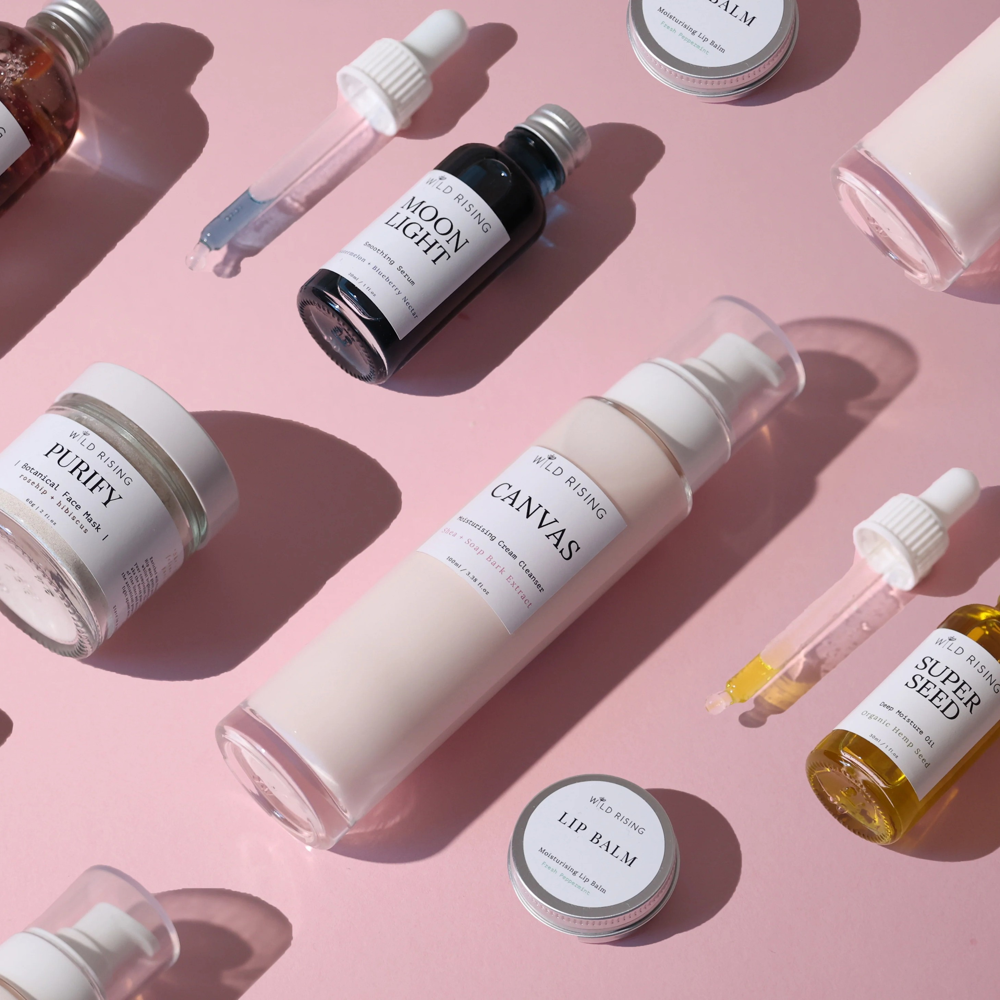
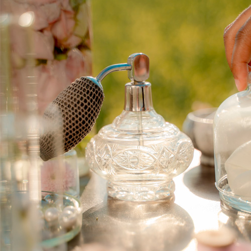

Produtos em Destaque
Maquiagem
A maquiagem ajuda a realçar a beleza e a autoestima. Entre os produtos mais usados estão base, batom, máscara de cílios e blush.
Skincare

O skincare é uma rotina de cuidados com a pele. Ele pode incluir limpeza, hidratação e proteção solar, ajudando a manter a pele saudável.
Perfumes

Os perfumes fazem parte do cuidado pessoal e ajudam a marcar presença. Existem fragrâncias florais, doces, cítricas e amadeiradas.